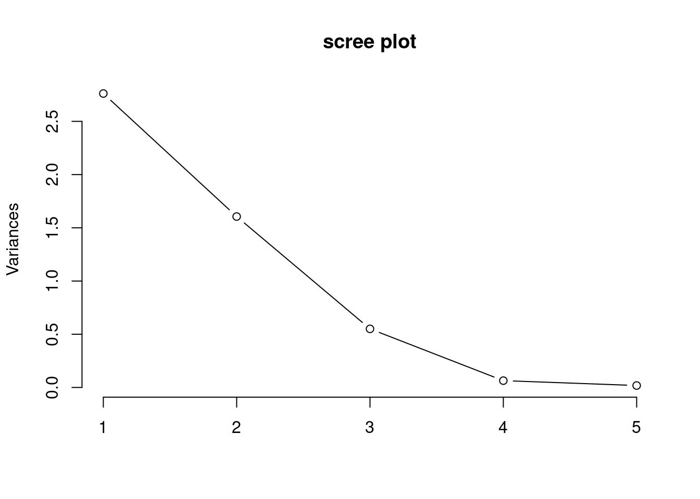
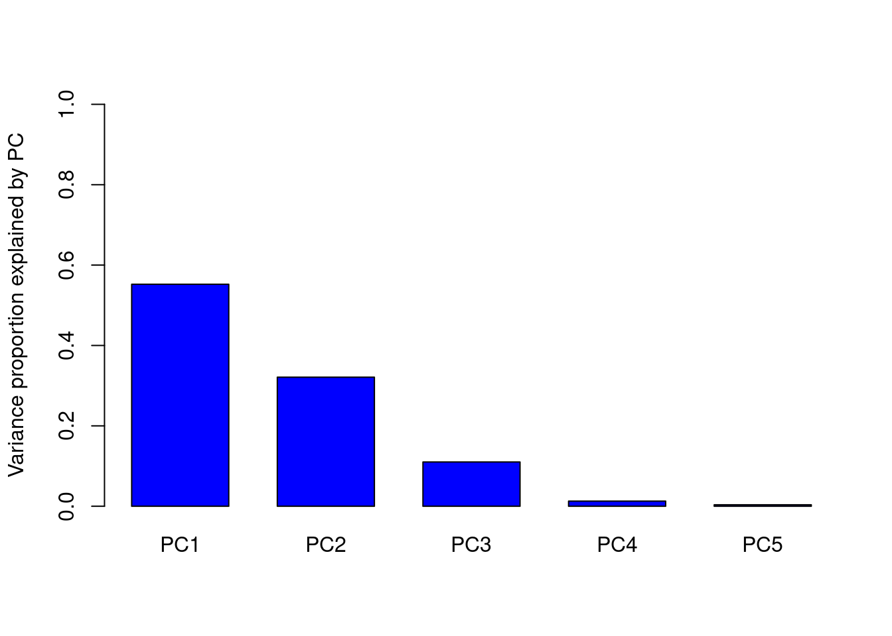

dat1 <- read.csv(file = "data/ch4_dat1.csv")
dat1 X1 X2
1 4 3
2 2 0
3 0 -1
4 -1 1
5 -5 -3x <- as.matrix(dat1)dat1 <- read.csv(file = "data/ch4_dat1.csv")
dat1 X1 X2
1 4 3
2 2 0
3 0 -1
4 -1 1
5 -5 -3x <- as.matrix(dat1)특이치 분해
s <- svd(x)
diag(s$d) [,1] [,2]
[1,] 7.878381 0.000000
[2,] 0.000000 1.982704s$u [,1] [,2]
[1,] -0.63208376 0.22647249
[2,] -0.21594559 -0.53031722
[3,] 0.06673086 -0.42903564
[4,] 0.04124194 0.69419425
[5,] 0.74005656 0.03868612s$v [,1] [,2]
[1,] -0.8506508 -0.5257311
[2,] -0.5257311 0.8506508분산-공분산 행렬의 특이치 분해
cov(x) X1 X2
X1 11.5 6.5
X2 6.5 5.0svd(cov(x))$d
[1] 15.5172209 0.9827791
$u
[,1] [,2]
[1,] -0.8506508 -0.5257311
[2,] -0.5257311 0.8506508
$v
[,1] [,2]
[1,] -0.8506508 -0.5257311
[2,] -0.5257311 0.8506508상관계수 행렬의 특이치 분해
cor(x) X1 X2
X1 1.0000000 0.8571946
X2 0.8571946 1.0000000svd(cor(x))$d
[1] 1.8571946 0.1428054
$u
[,1] [,2]
[1,] -0.7071068 -0.7071068
[2,] -0.7071068 0.7071068
$v
[,1] [,2]
[1,] -0.7071068 -0.7071068
[2,] -0.7071068 0.7071068주성분 스코어
x %*% s$v [,1] [,2]
[1,] -4.9797966 0.44902798
[2,] -1.7013016 -1.05146222
[3,] 0.5257311 -0.85065081
[4,] 0.3249197 1.37638192
[5,] 5.8304474 0.07670314제곱합-교차곱 행렬의 고유치 및 고유벡터
eigen(t(x) %*% x)eigen() decomposition
$values
[1] 62.068884 3.931116
$vectors
[,1] [,2]
[1,] -0.8506508 0.5257311
[2,] -0.5257311 -0.8506508dat2 <- read.csv("data/ch4_dat2.csv", fileEncoding = "euc-kr")
x <- as.matrix(dat2[, 2:6])round(cor(x), 3) X1 X2 X3 X4 X5
X1 1.000 0.617 0.324 -0.355 0.014
X2 0.617 1.000 -0.512 0.466 0.423
X3 0.324 -0.512 1.000 -0.937 -0.563
X4 -0.355 0.466 -0.937 1.000 0.540
X5 0.014 0.423 -0.563 0.540 1.000pca_fit <- prcomp(x, center = TRUE, scale. = TRUE)
pca_fitStandard deviations (1, .., p=5):
[1] 1.6617648 1.2671437 0.7419994 0.2531070 0.1351235
Rotation (n x k) = (5 x 5):
PC1 PC2 PC3 PC4 PC5
X1 0.07608427 0.77966993 0.0008915975 0.140755404 0.60540325
X2 -0.39463007 0.56541218 -0.2953216494 -0.117644166 -0.65078503
X3 0.56970191 0.16228156 0.2412221065 0.637721889 -0.42921686
X4 -0.55982770 -0.19654293 -0.2565972887 0.748094314 0.14992183
X5 -0.44778451 0.08636803 0.8881182665 0.003668418 -0.05711464pca_var <- pca_fit$sdev^2
pca_var[1] 2.76146225 1.60565318 0.55056305 0.06406316 0.01825836screeplot(pca_fit, type = "lines", main = "scree plot")
rate_var <- pca_var / sum(pca_var)
rate_var[1] 0.552292449 0.321130636 0.110112610 0.012812632 0.003651673categories <- c("PC1", "PC2", "PC3", "PC4", "PC5")
barplot(rate_var,
names.arg = categories, cex.axis = 1,
ylab = "Variance proportion explained by PC",
col = "blue", space = 0.5, width = 1, ylim = c(0, 1)
)
dat3 <- read.csv(file = "data/ch4_dat3.csv")
dat3 x1 x2 x3 y
1 -3 -3 5 -30
2 -2 -3 7 -20
3 0 0 4 0
4 1 2 0 5
5 2 2 -5 10
6 2 2 -11 35x <- as.matrix(dat3[, 1:3])pca_fit <- prcomp(x, center = TRUE, scale. = FALSE)
pca_fitStandard deviations (1, .., p=3):
[1] 7.3965798 1.6640445 0.3486597
Rotation (n x k) = (3 x 3):
PC1 PC2 PC3
x1 0.2525343 -0.5487321 -0.79694382
x2 0.2841664 -0.7452586 0.60319073
x3 -0.9249194 -0.3787911 -0.03227211pca_var <- pca_fit$sdev^2
pca_var[1] 54.7093924 2.7690440 0.1215636PRC <- predict(pca_fit, x)
PRC PC1 PC2 PC3
[1,] -6.2346992 1.9880169 0.41989870
[2,] -7.8320036 0.6817026 -0.44158935
[3,] -3.6996775 -1.5151642 -0.12908845
[4,] 0.8208672 -2.0392493 0.40943764
[5,] 5.6979984 -0.6940262 -0.22614561
[6,] 11.2475146 1.5787202 -0.03251293학습데이터 생성
dat4 <- as.data.frame(cbind(PRC, y = dat3$y))모형 추정
lm_fit <- lm(y ~ PC1 + PC2, data = dat4)
summary(lm_fit)
Call:
lm(formula = y ~ PC1 + PC2, data = dat4)
Residuals:
1 2 3 4 5 6
-6.754 4.591 6.951 -2.574 -8.394 6.179
Coefficients:
Estimate Std. Error t value Pr(>|t|)
(Intercept) -5.017e-15 3.577e+00 0.000 1.0000
PC1 2.919e+00 5.297e-01 5.510 0.0118 *
PC2 -2.539e+00 2.355e+00 -1.078 0.3598
---
Signif. codes: 0 '***' 0.001 '**' 0.01 '*' 0.05 '.' 0.1 ' ' 1
Residual standard error: 8.761 on 3 degrees of freedom
Multiple R-squared: 0.9131, Adjusted R-squared: 0.8552
F-statistic: 15.76 on 2 and 3 DF, p-value: 0.02562anova(lm_fit)Analysis of Variance Table
Response: y
Df Sum Sq Mean Sq F value Pr(>F)
PC1 1 2330.45 2330.45 30.3601 0.01177 *
PC2 1 89.27 89.27 1.1629 0.35984
Residuals 3 230.28 76.76
---
Signif. codes: 0 '***' 0.001 '**' 0.01 '*' 0.05 '.' 0.1 ' ' 1library(pls)
Attaching package: 'pls'The following object is masked from 'package:stats':
loadingsdat3 <- read.csv(file = "data/ch4_dat3.csv")PLS 모형 추정
pls_fit <- plsr(y ~ ., ncomp = 2, data = dat3)잠재변수행렬 (T)
scores(pls_fit) Comp 1 Comp 2
1 -6.3186736 -2.0166999
2 -7.8514212 -0.5903390
3 -3.6285452 1.5267780
4 0.9071363 1.9538097
5 5.7243429 0.7083091
6 11.1671608 -1.5818579
attr(,"class")
[1] "scores"
attr(,"explvar")
Comp 1 Comp 2
94.972728 4.811507 X-로딩 행렬 (P)
loadings(pls_fit)
Loadings:
Comp 1 Comp 2
x1 0.254 0.548
x2 0.286 0.736
x3 -0.925 0.424
Comp 1 Comp 2
SS loadings 1.002 1.021
Proportion Var 0.334 0.340
Cumulative Var 0.334 0.674가중치행렬 (W)
loading.weights(pls_fit)
Loadings:
Comp 1 Comp 2
x1 0.282 0.651
x2 0.313 0.632
x3 -0.907 0.420
Comp 1 Comp 2
SS loadings 1.000 1.000
Proportion Var 0.333 0.333
Cumulative Var 0.333 0.667y-로딩 벡터 (b)
Yloadings(pls_fit)
Loadings:
Comp 1 Comp 2
y 2.927 2.491
Comp 1 Comp 2
SS loadings 8.568 6.204
Proportion Var 8.568 6.204
Cumulative Var 8.568 14.772\(\beta_{PLS}\)
coef(pls_fit, intercept = TRUE), , 2 comps
y
(Intercept) 0.000000
x1 2.475395
x2 2.523238
x3 -1.704636학습데이터 생성
dat4 <- as.data.frame(cbind(scores(pls_fit), y = dat3$y))모형 추정
lm_fit <- lm(y ~ ., data = dat4)
summary(lm_fit)
Call:
lm(formula = y ~ ., data = dat4)
Residuals:
1 2 3 4 5 6
-6.481 4.453 6.819 -2.522 -8.520 6.252
Coefficients:
Estimate Std. Error t value Pr(>|t|)
(Intercept) -6.085e-15 3.546e+00 0.000 1.0000
`Comp 1` 2.927e+00 5.257e-01 5.568 0.0114 *
`Comp 2` 2.491e+00 2.358e+00 1.056 0.3684
---
Signif. codes: 0 '***' 0.001 '**' 0.01 '*' 0.05 '.' 0.1 ' ' 1
Residual standard error: 8.686 on 3 degrees of freedom
Multiple R-squared: 0.9146, Adjusted R-squared: 0.8576
F-statistic: 16.06 on 2 and 3 DF, p-value: 0.02497anova(lm_fit)Analysis of Variance Table
Response: y
Df Sum Sq Mean Sq F value Pr(>F)
`Comp 1` 1 2339.46 2339.46 31.0046 0.01143 *
`Comp 2` 1 84.18 84.18 1.1156 0.36841
Residuals 3 226.37 75.46
---
Signif. codes: 0 '***' 0.001 '**' 0.01 '*' 0.05 '.' 0.1 ' ' 1